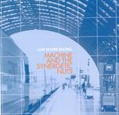

| Artist: | Machine And The Synergetic Nuts |
| Title: | Leap Second Neutral |
| Label: | Cuneiform Rune Rune 210 |
| Length(s): | 54 minutes |
| Year(s) of release: | 2004 |
| Month of review: | [09/2005] |
| 1) | M-B | 7.18 |
| 2) | Monaco | 2.28 |
| 3) | Trout | 6.22 |
| 4) | Neutral | 7.49 |
| 5) | Stum | 4.44 |
| 6) | OZ | 5.51 |
| 7) | Solid Box | 7.08 |
| 8) | Texas | 5.13 |
| 9) | Normal | 7.24 |
Samples of Leap Second Neutral appear here by kind permission of Cuneiform Records.
Monaco is also pacey, but still subdued. The drummer plays his fast rolls, making the result sound quite modern. The warm vibes give the music a seventies atmosphere. After this relatively short song, the drummer continues to stay busy in Trout. Plenty of mood and pace variation in this one.
Neutral is a more groovy piece of work with those seventies rhythm guitars and dito horns. Of course, the warm vibes are ever present. More groove usually means less melody, and indeed this is the case here. There is also more meandering on this one, than on previous tracks. On the second half of the track, the music becomes louder, though not much less meandering, but it does help.
Stum is another swinging track. Again the horns sound more like American style jazzrock from the seventies, and maybe a bit of funk. I am reminded of funk rock bands from the seventies, although these weren't instrumental that often. There is also a certain amount of complexity here, with the guitar doing a kind punctuation of the relatively melodic piano.
OZ continues the seventies sound with the warm vibes in place, and the horns wandering off. The approach is light, with many change overs in the music, all led by the good drummer in this band. Towards halfway, the guitar sets in for some more meandering. Solid Box is a bit rowdier, because of the rough organ sound. It takes a repetitive lead here, with the horns filling in the holes. Later on the organ becomes even more dominant, going a bit over the edge even at times. The pace is higher in the middle, but soon the bottom drops out, and we return to a slightly experimental intermezzo. The ending is playful.
Texas sounds rather noisy by comparison. Sound and effects are coming in fast on this one, with the drummer making quite a bit of headway, and the guitar revolving in the back. A strange track. Halfway, the horns get more control, but the guitar distortion continues. A rowdy tune.
Normal is the closer, in the warm seventies style of earlier tracks. The drummer is also more relaxed here, and the sax is moody. Towards the end, the distortion guitar sets in again.